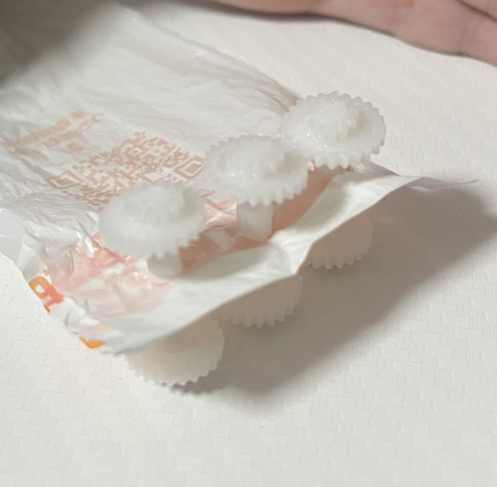

制作理由
普段、電車に乗っている時に混雑してきて人に押されたことで、つり革の位置が少し持ちづらくなるということがあったのでその
問題が解決するよう自分の1番持ちやすい位置に動かすことができるつり革があればいいなと思い作成しました。
制作段階の画像

完成作品

作品説明
稼働部分をカーテンレールのようなものをイメージして歯車とレールで作りました。
つり革の持ち手は、猫耳をつけて掴みたくなるようにして見ました。
レールと持ち手を繋げる部分はビニール袋を切り取って作りました。
反省点

歯車の噛み合わせが上手く合わず、ボンドで無理やりくっつけたので、もっと隙間の穴の大きさを計算しておくべきだったなと思いました。
また、実現が難しかったのですが、自分の持ちやすい位置でつり革を固定させる事ができるようにしたかったです。
使用機材：3Dプリンター